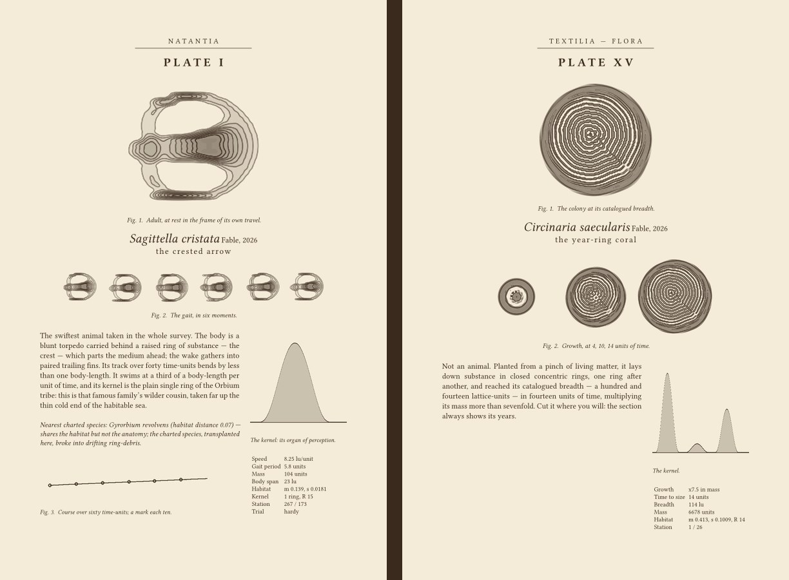
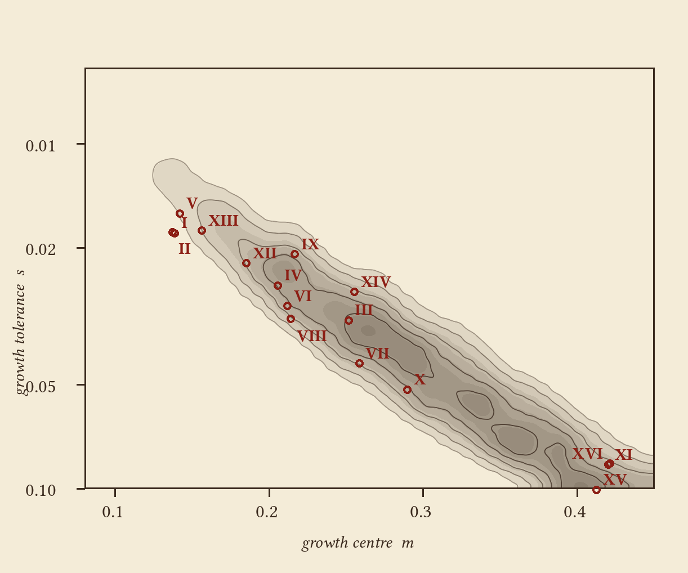

being a natural history of sixteen forms of mathematical life, discovered, measured, figured and named in a single day's expedition through 156,288 worlds
Every specimen below is alive: the equation is running in your browser. Tap the tank to drop a pinch of living matter near your finger.
The expedition's full monograph — twenty-two pages: the country, the methods, sixteen plates in the manner of a nineteenth-century natural history (each with portrait, gait figures, the kernel, and field notes), the habitability chart, and the calibration appendix.
Read the field guide (PDF, 22 pages) the full register (422 records, JSONL)


A uniform census of 87,051 random worlds: the fraction still bearing bounded life after forty units of time, over growth centre m and tolerance s. Life in this country is a single narrow reef. Red marks are the sixteen catalogued species' habitats.
Watch the expedition's film — every creature in it was alive on the machine, on the day.